In this tutorial you'll learn how to create a super duper cool project using Oculus Rift and Nuitrack. We'll create a VR game called "Zombie Nightmare". The player's goal is to kill all zombies that randomly appear from everywhere. The player has a limited number of lives. If a zombie takes a bite of a player, the player's health slightly decreases and eventually he can die :( So what is that bewitching little detail of that seemingly trivial project? The point is that the player has to destroy zombies not with his hands... but with his LEGS! Have you ever used your legs when playing with Oculus Rift? We haven't! And now your wildest dreams come true thanks to Nuitrack!
You'll need just a couple of things for this project:
Hardware:
Software:
You can find the finished project in Nuitrack SDK: Unity 3D → NuitrackSDK.unitypackage → Tutorials → Zombie Nightmare (RIFT)
Setting Up the Project
-
Create a new project and name it as you wish (for example, “Incredible Zombie Game with Nuitrack”).
-
Download Nuitrack Skeleton Tracking package from Unity Asset Store and import it to the project: Assets → Import Package → Custom Package.
-
Open the scene "City" (Nuitrack SDK → Tutorials → Zombie Nightmare (RIFT) → City). Our zombie apocalypse begins in a developed megalopolis (New York? Who knows...).
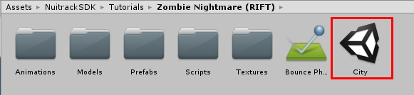
-
Download Oculus Integration package from Unity Asset Store, which provides Advanced Oculus Rift, Touch, and Gear VR support for rendering, audio, social, and avatars, and import it to the project.
-
Enable VR support in Unity settings: Build Settings → Player Settings → XR Settings → Virtual Reality Supported.
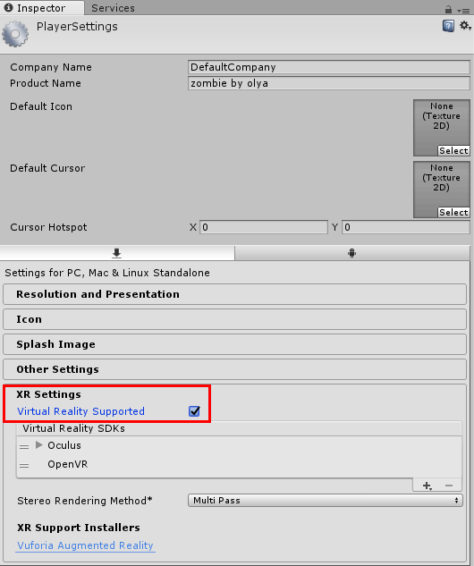
-
Drag-and-drop the OVRCameraRig prefab to the scene: Assets → Oculus → VR → Prefabs. This is gonna be the player's head. Set its Position/Rotation/Scale to (0, 0, 0) so that the player is standing in the center of the scene (as he is the new hope of mankind in our game). Set Tracking Origin Type in settings of the OVRCameraRig prefab: OVRManager → Tracking → Tracking Origin Type → Floor Level so that the camera is located at the player's height level.
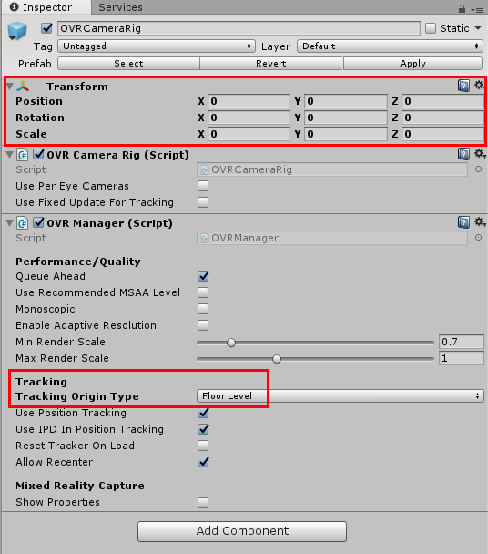
-
Drag-and-drop the LocalAvatar prefab to the scene: Assets → Oculus → Avatar → Content → Prefabs. This is gonna be the player's body. This body will mesmerize our zombies and they will run towards it.
-
Drag-and-drop the NuitrackScripts prefab to the scene: Nuitrack SDK → Nuitrack → Prefabs. Tick the required modules for user's skeleton tracking: Skeleton Tracker Module On, User Tracker Module On.
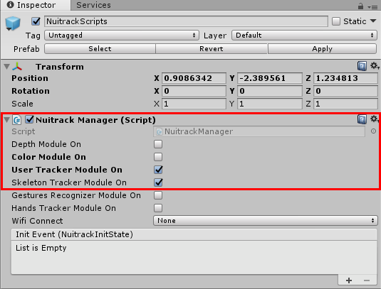
Creating the Player's Legs
-
Create a new script and name it NuitrackLegs.cs. In this script, we'll define the skeleton tracking and create the player's legs.
-
Add the necessary fields. An "offset" is a skeleton offset that is calculated based on the data received from Oculus Rift (head) and Nuitrack (the rest of the skeleton joints).
public class NuitrackLegs : MonoBehaviour
{
[SerializeField] Transform head;
[SerializeField] Rigidbody leftLeg, rightLeg;
[SerializeField] Transform floor;
Vector3 offset;
Quaternion q180 = Quaternion.Euler(0f, 180f, 0f);
Vector3 newPosLeft, newPosRight;
}
-
In Update, process the user's skeleton if it is found.
void Update()
{
if (CurrentUserTracker.CurrentSkeleton != null) ProcessSkeleton(CurrentUserTracker.CurrentSkeleton);
}
-
In ProcessSkeleton, calculate the position of the left leg and right leg (see our Animating the Avatar using Skeleton tutorial for more details), taking into account the offset. In case the user's legs are located below the floor level (in Unity) during the tracking (this may happen if the player sits down, for example), their position will be automatically corrected so that the user's legs won't go underground.
void ProcessSkeleton(nuitrack.Skeleton skeleton)
{
newPosLeft = q180 * (CalibrationInfo.SensorOrientation * (0.001f * skeleton.GetJoint(nuitrack.JointType.LeftAnkle).ToVector3())) + offset;
newPosRight = q180 * (CalibrationInfo.SensorOrientation * (0.001f * skeleton.GetJoint(nuitrack.JointType.RightAnkle).ToVector3())) + offset;
if (newPosLeft.y < floor.position.y)
{
newPosLeft = new Vector3(newPosLeft.x, floor.position.y, newPosLeft.z);
}
if (newPosRight.y < floor.position.y)
{
newPosRight = new Vector3(newPosRight.x, floor.position.y, newPosRight.z);
}
}
-
Calculate the offset for the whole skeleton (head joint position detected by Nuitrack is subtracted from head position detected by Oculus Rift).
void ProcessSkeleton(nuitrack.Skeleton skeleton)
{
...
offset = head.position - (q180 * (CalibrationInfo.SensorOrientation * (0.001f * skeleton.GetJoint(nuitrack.JointType.Head).ToVector3())));
}
-
In FixedUpdate, apply the coordinates to the user's legs. We use FixedUpdate instead of Update for that purpose because Unity physics is only processed in this method.
void FixedUpdate ()
{
leftLeg.MovePosition(newPosLeft);
rightLeg.MovePosition(newPosRight);
}
- Note
- Learn more about the MovePosition method at Unity website.
-
Drag-and-drop the script to the LocalAvatar prefab.
-
Set the fields in the prefab settings:
Head - CenterEyeAnchor (from the OVRCameraRig prefab)
LeftLeg - leg Left (from hierarchy)
RightLeg - leg Right (from hierarchy)
Floor - FLOOR (from hierarchy)
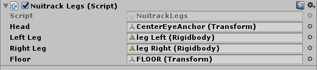
-
Run the project. You should see your feet displayed as nice blue sneakers. Movement is tracked by Nuitrack. You will also see the "screen" with the user's segment that helps to check FPS and understand whether the user's legs are in the frame or not.
- Note
- You can use not only leg joints but also all other skeleton joints detected by Nuitrack (21 joints all in all) (see the complete list at Nuitrack official website). Don't forget to add the offset!
Determining the Game Logic
-
Create a new script and name it GameManager.cs. In this script, we'll describe the end and restart of our game and when the zombies appear.
-
Add the necessary fields: maximum number of spawned zombies, an array with enemies, an array with spawn points for zombies, restart time after the player's death and counter for spawned zombies.
public class GameManager: MonoBehaviour
{
[SerializeField] int maxEnemies = 100;
[SerializeField] GameObject[] enemies;
[SerializeField] Transform[] spawnPoints;
float restartTime = 5;
int enemiesCount = 0;
}
-
In Start, the constantly repeated method SpawnEnemy defines that the zombies spawn in 3 seconds after start every 0.2 seconds. If maximum number of spawned zombies is reached, the method is not executed anymore. Before spawning, the size of each zombie is a bit changed (so they don't look like a uniform bunch).
void Start()
{
InvokeRepeating("SpawnEnemy", 3, 0.2f);
}
void SpawnEnemy()
{
if (enemiesCount >= maxEnemies)
return;
float randomSize = Random.Range(0.2f, 0.3f);
enemies[Random.Range(0, enemies.Length)].transform.localScale = Vector3.one * randomSize;
Instantiate(enemies[Random.Range(0, enemies.Length)], spawnPoints[Random.Range(0, spawnPoints.Length)].position, Quaternion.identity);
enemiesCount++;
}
- Note
- The InvokeRepeating method cyclically calls the required method at regular time intervals.
-
The GameOver method initiates the execution of the Restart method, which restarts the game after a certain time and starts a new level.
public void GameOver()
{
StartCoroutine(Restart());
}
IEnumerator Restart()
{
yield return new WaitForSeconds(restartTime);
Application.LoadLevel(Application.loadedLevel);
}
-
In Unity, create an Empty Object (GameObject → Create Empty) and name it GameManager. Drag-and-drop the script to this object.
-
In settings of the GameManager object, fill in the enemies field with zombies: Tutorials → Zombie Nightmare (RIFT) → Prefabs (Parasite, Hulk, Zombie Police).
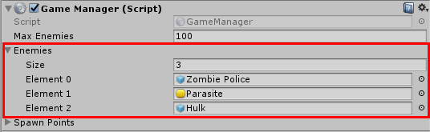
-
Set the spawn points for zombies as well: Spawn Points → SpawnPoint(1)(Transform), SpawnPoint(2)(Transform) (from hierarchy).
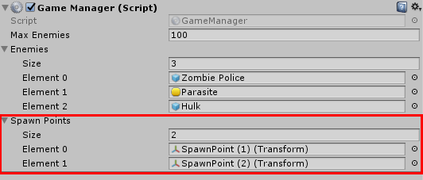
-
Run the project. The zombies will randomly appear on the scene (this looks pretty funny).

Creating the Player and Zombies
-
Time to create a savior of our little world! Create a new script and name it Player.cs.
-
Add the necessary fields: health score and healthbar.
public class Player : MonoBehaviour
{
float health = 100;
[SerializeField] UnityEngine.UI.Image healthBar;
}
-
In the GetDamage method, set the damage from a zombie to the player. If the player has 0 lives, the remaining code is not executed. If the player has enough lives, he loses health when a zombie bites him (healthbar turns red) or, otherwise, dies (obviously). After the player's death (the Death method) the level restarts in 3 seconds.
public void GetDamage(float damage)
{
if (health <= 0)
return;
health -= damage;
if(health <= 0)
{
health = 0;
FindObjectOfType<GameManager>().GameOver();
}
healthBar.fillAmount = health / 100;
}
-
Drag-and-drop the script to localAvatar - base, add healthbar from Canvas.
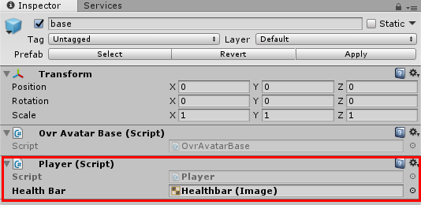
-
Select base, add Capsule Collider and Rigidbody, tick Is Kinematic (so that the capsule doesn't fall) and set the settings as shown in the screenshot (zombies will encircle the player).
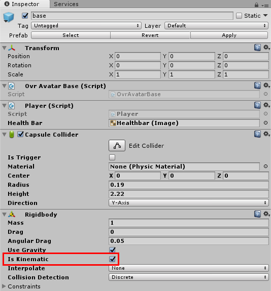
-
And now it's time to create a devil's brat, an evil itself – a zombie. Create a new script and name it ZombieController.cs. In this script, we'll describe the behavior of zombies in our game.
-
Add the necessary fields.
public class ZombieController : MonoBehaviour
{
[SerializeField] int hp = 100;
[SerializeField] float damage = 0.01f;
[SerializeField] float speed = 1;
[SerializeField] Transform floorChecker;
[SerializeField] Animator animator;
[SerializeField] float attackDistance = 0.7f;
[SerializeField] Transform modelTransform;
float standTime = 0, flyTime = 0;
bool isOnGround = false;
bool isFly = false;
bool isRagdoll = true;
bool canAttack = false, prevCanAttack = false;
Player target;
Rigidbody rb;
Rigidbody[] rigidbodyRagdoll;
Collider[] colliderRagdoll;
Vector3 localPosition;
}
-
In the Awake method, get localPosition and modelTransform from a zombie, save the start local coordinates of the zombie's child object, which will be ragdolled, so that we can return this child object to its original position when Ragdoll is finished.
void Awake()
{
localPosition = modelTransform.localPosition;
}
-
In Start, get the references to Rigidbody and Colliders of zombie's body parts and zombie's main Rigidbody for later use in Ragdoll processing. Disable Ragdoll and find the target (player) for a zombie.
void Start()
{
rigidbodyRagdoll = GetComponentsInChildren<Rigidbody>();
colliderRagdoll = GetComponentsInChildren<Collider>();
rb = GetComponent<Rigidbody>();
SwitchRagdoll(false);
target = FindObjectOfType<Player>();
}
-
Process the zombie Ragdoll switching in the switchRagdoll method. Ragdoll is enabled when we just gave a zombie a good kick and he flew away like a bird. We need to use Ragdoll so our zombies flies nice and good, otherwise he will just “walk on skies”. Ragdoll is disabled when the zombie has landed and lay on the ground for like 2 seconds.
void SwitchRagdoll(bool ragdoll)
{
if (ragdoll != isRagdoll)
{
if (ragdoll)
{
for (int i = 0; i < rigidbodyRagdoll.Length; i++)
{
rigidbodyRagdoll[i].isKinematic = false;
rigidbodyRagdoll[i].velocity = rb.velocity;
}
}
else
{
modelTransform.localRotation = Quaternion.identity;
transform.position = modelTransform.position;
modelTransform.localPosition = localPosition;
for (int i = 0; i < rigidbodyRagdoll.Length; i++)
{
rigidbodyRagdoll[i].isKinematic = true;
}
}
rb.isKinematic = ragdoll;
for (int i = 0; i < colliderRagdoll.Length; i++)
{
colliderRagdoll[i].enabled = ragdoll;
}
GetComponent<Collider>().enabled = !ragdoll;
animator.enabled = !ragdoll;
}
isRagdoll = ragdoll;
}
-
In the IsOnGround method, we check whether the zombie is on the ground or not. Each zombie has the FloorChecker object that helps to check zombie's position. This object is always downwards and can be treated as a point for casting the ray to check the floor position. Create a ray and set it up.
bool IsOnGround()
{
floorChecker.rotation = Quaternion.identity;
Vector3 direction = -floorChecker.up;
float maxDistance = 0.5f;
Ray ray = new Ray(floorChecker.position, direction);
return Physics.Raycast(ray, maxDistance);
}
-
In Update, determine the conditions when the zombie can attack and when the attack starts. Also, define the zombie's behavior depending on his state (on the ground, flew and fell on ground, flying). Fortunately, our zombies can fly only after our good kick.
void Update()
{
if (hp <= 0)
return;
isOnGround = IsOnGround();
canAttack = isOnGround && Vector3.Distance(transform.position, target.transform.position) <= attackDistance && hp > 0;
if (canAttack != prevCanAttack)
{
prevCanAttack = canAttack;
StartCoroutine(Attacking());
}
animator.SetBool("Attacking", canAttack);
if (isOnGround)
{
if (standTime > 2.0f)
{
if(isRagdoll)
SwitchRagdoll(false);
transform.LookAt(target.transform);
rb.AddForce(transform.forward * speed);
}
standTime += Time.deltaTime;
if (isFly)
{
isFly = false;
GetDamage((int)(flyTime * 10));
flyTime = 0;
}
}
else
{
standTime = 0;
isFly = true;
flyTime += Time.deltaTime;
if (flyTime >= .1f && !isRagdoll)
SwitchRagdoll(true);
}
}
-
In IEnumerator Attacking wait for 1 sec and attack (zombie bites every second).
IEnumerator Attacking()
{
yield return new WaitForSeconds(1.0f);
if (hp > 0)
{
target.GetDamage(damage);
if (canAttack)
StartCoroutine(Attacking());
}
}
-
In the GetDamage method define the damage from the player and from the flight.
void GetDamage(int damage)
{
hp -= damage;
if (hp <= 0)
Death();
}
-
In the Death method, define the events after the zombie's death. Each zombie has an array with SkinnedMeshRenderers (they're used to display the model). Loop over the array elements and paint the body parts red. Turn the Ragdoll on (so the zombie falls after his death). Destroy the zombie after 5 seconds.
void Death()
{
SkinnedMeshRenderer[] bodyParts = GetComponentsInChildren<SkinnedMeshRenderer>();
for (int i = 0; i < bodyParts.Length; i++)
{
bodyParts[i].material.color = Color.red;
}
SwitchRagdoll(true);
Destroy(gameObject, 5);
}
-
In the OnCollisionEnter method, define the damage to zombies when the player crushes them with his feet (the player has a collider tagged as Player attached to the bottom of his sneakers - you can use this to smash the zombies).
void OnCollisionEnter(Collision collision)
{
if (collision.transform.tag == "Player")
{
GetDamage(10);
}
}
-
Select the prefabs Hulk, Zombie Police, Parasite from the Prefabs folder and add a component: Add Component → Zombie Controller.
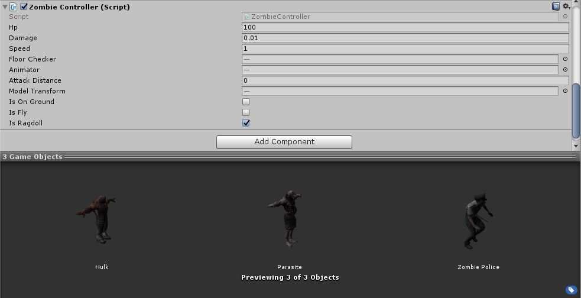
- Note
- You can easily create your own zombie if you'd like to:
- Download a zombie model, for example, from this website.
- Drag-and-drop it to the scene. Set the size to 0.2 along all axes.
- Add Rigidbody and Capsule Collider. Set the size of Capsule Collider and apply the physical material “Bounce Phys Material”.
- Open GameObject/3D Object/Ragdoll... In the popup window, fill in the necessary fields and click Create. The body and limbs of a zombie should now have colliders. Perhaps, you'll need to adjust their size manually. Also, we recommend you to tick Enable Projection on CharacterJoint components to prevent excessive movement of skeleton joints.
- Select Animator > Controller and apply Controller “Zombie Anim”.
- Create an empty object, make it child to Hips (or any similar one) and name it FloorChecker.
- Add ZombieController. Fill in the fields.
- Save the prefab and delete it from the scene.
-
In Unity, select the ZombieController(Script) object and set it up: add Floor Checker to Floor Checker, Animator to Animator, and a child object of a zombie to Model Transform (there is only one child object for each zombie). Drag-and-drop the zombie (prefab) to the scene and click Apply so that the settings take effect. If you want, you can set the damage from a zombie, his speed and lives in settings.
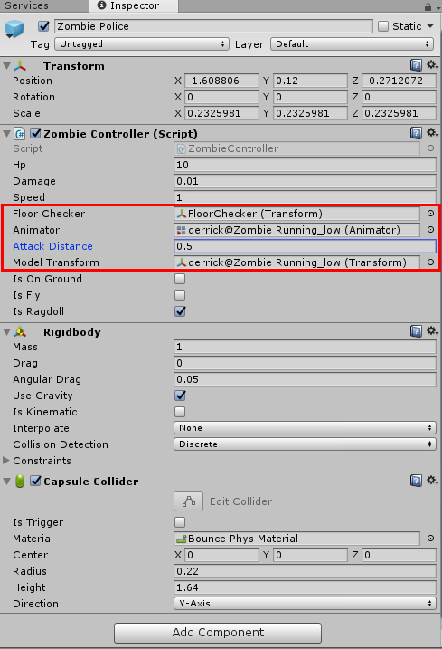
-
Run the project. Watch out, a bunch of zombies run toward you and bite you! Kick them off and crush them with your feet!

You can use this project as a strong base and develop more sophisticated games with Oculus Rift and Nuitrack Skeleton Tracking middleware (though it will be hard to beat such a fascinating game as our “Zombie Nightmare”... just kidding). Have fun!


 1.8.6
1.8.6